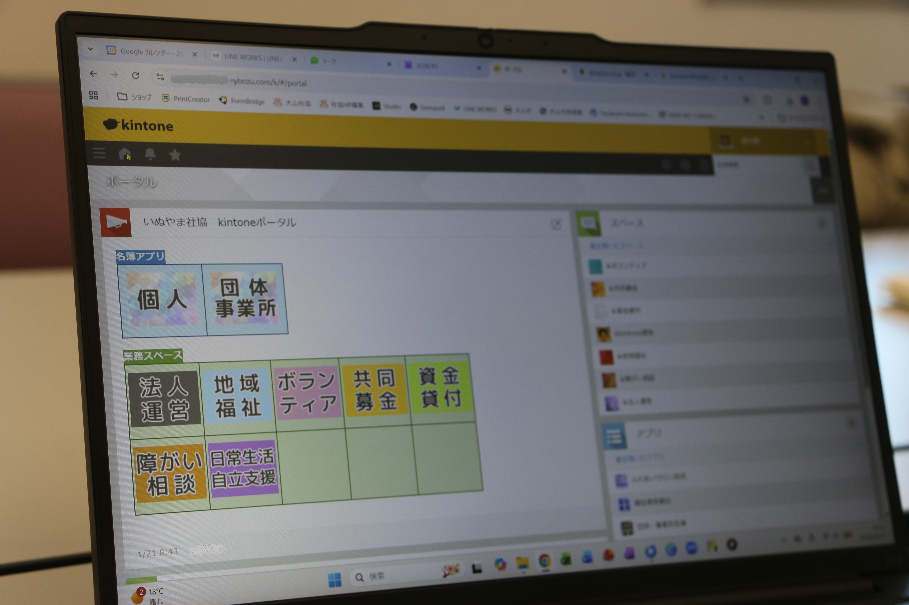

kintone導入
社会福祉法人 犬山市社会福祉協議会
脱Excelとペーパーレスで実現する「情報の見える化」と「地域福祉の深化」
犬山市社会福祉協議会について
犬山市社会福祉協議会は、「ふだんの くらしを しあわせに」を理念に掲げる社会福祉法人です。地域福祉の推進を担い、ボランティアの育成・支援、助成金の管理、資金貸付、障がい者相談支援、日常生活自立支援など多岐にわたる福祉サービスを展開しています。地域サロンへの訪問や災害時のボランティアセンター運営なども行い、住民に身近な福祉の拠点として活動しています。kintoneの導入により、業務のデジタル化と効率化を進めています。
導入前の課題
- 業務の多くは紙の書類で管理。情報の検索性が低く、書類の紛失リスクや管理の煩雑さが課題となっていました。
- Excelも利用していたものの、複雑な関数でブラックボックス化。データ管理方法が人によって異なり、「誰が見ても状況がわかる」状態ではありませんでした。
- 一人の相談者が複数事業（ボランティア、助成金、貸付など）に関わる場合、部門ごとにデータが分断され全体像の把握が困難でした。
導入効果
-
ペーパーレス化と人件費コスト削減紙中心だった書類管理から脱却し、ほぼ紙を使わず運用が可能に。検索・集計にかかる人的コストが大幅に削減されました。
-
対応履歴の蓄積と属人化の解消ブラックボックス化していたExcel管理を刷新。レコードコメント機能で担当者以外も経緯を把握可能になり、引き継ぎ・情報共有がスムーズになりました。
-
部門を超えた情報の横断的な共有分断されていた部門ごとのデータを個人マスターに集約。相談者がどの団体に属し、過去にどのような相談をしたか一目で把握可能になり、質の高い相談支援が実現しました。
具体的な活用事例
kintoneを活用した日常業務の様子
-
助成金の申請・管理業務申請受付から承認、実績報告までkintone内で完結。プロセス管理機能による決裁、プリントクリエイターによる決定通知書発行、封筒の宛名印刷まで一気通貫で対応しています。
-
車両貸出管理カレンダープラグインで予約状況を可視化。リマインダー通知で返却・貸出予定を関係者間で共有しています。
-
現場での写真・状況報告地域サロン訪問時、タブレットやスマホから直接写真をアップロード。75歳のパート職員でもスムーズに操作できる使いやすさです。
-
ビジュアルを重視したポータル設計Canvaでアイコンを作成し、ラベル機能で色分け。「見ただけで使い方がわかる」画面を構築し、ITが苦手な職員でも迷わず使える環境を実現しました。

Canvaで作成したアイコンを活用した、見やすいポータル画面
導入のきっかけ・決め手
以前から事務改善の必要性を感じていた犬山市社会福祉協議会。市役所から派遣された事務局次長が着任したタイミングで営業を受けたことがきっかけとなりました。
CMや広告でkintoneの存在は認知していたものの、実際の業務にどう活かせるのかは未知数でした。しかし、具体的な業務への落とし込みを話し合う中で「これなら使える」と判断し、導入を決定しました。
今後の展望
- フォームブリッジで貸付利用者へのフォローアップアンケートをSMS送付し、直接データを収集。利用者の声をより迅速に把握する仕組みを構築予定です。
- 市役所とのゲストスペースを通じた情報共有など、組織の枠を超えた連携を進め、地域全体での福祉サービス向上を目指します。